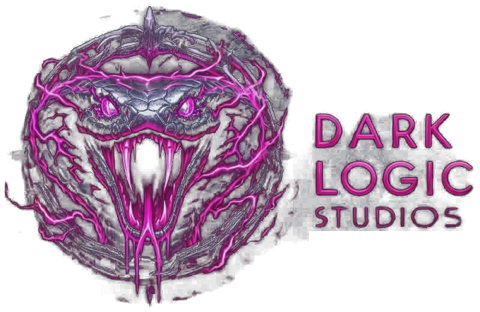
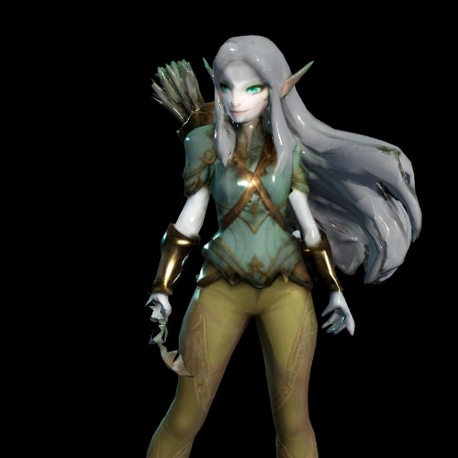
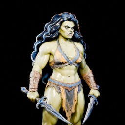

Click / Space to continue · Esc to skip

Loading…

Energy bow. Tap to shoot, hold to charge a piercing shot. Fragile, deadly at range.

Dual daggers. Fast 3-hit combo ending in a spinning cleave. Tough, deadly up close.
Huge ice hammer: hold to charge a slam that chills. Q casts frost magic. His runes glow as power builds.
Beat Frostreach then Inferno first to unlock The Druid.Brought to you by Dark Logic Studios · Sophisticated Brutality
The Void is not done with you.
Brought to you by Dark Logic Studios · Sophisticated Brutality
You can close this tab.